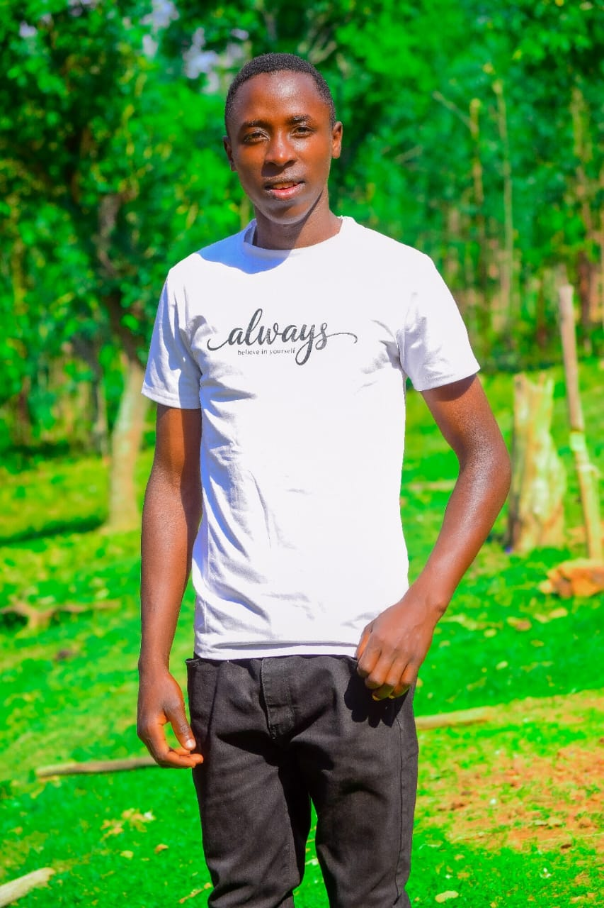

About Me
My name is Otieno Valentine, a motivated and enthusiastic second-year student at Jomo Kenyatta University of Agriculture and Technology (JKUAT), pursuing a degree in Fisheries and Aquaculture. I have a strong interest in aquatic resource management, fish production, aquaculture development and sustainable utilization of aquatic ecosystems.
Fun fact: Programme: Fisheries and Aquaculture. Year of Study:4. Home County: Homa bay: Dream Job: Fisheries and Aquaculture Specialist, with a focus on sustainable fish production, aquaculture development and aquatic resource management.
See my academic journey